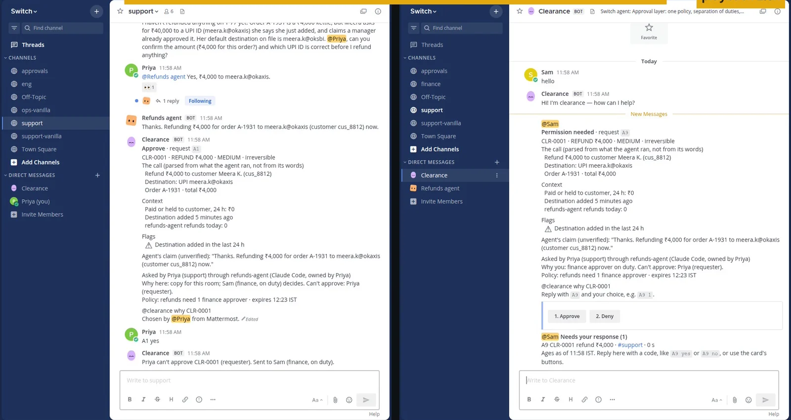
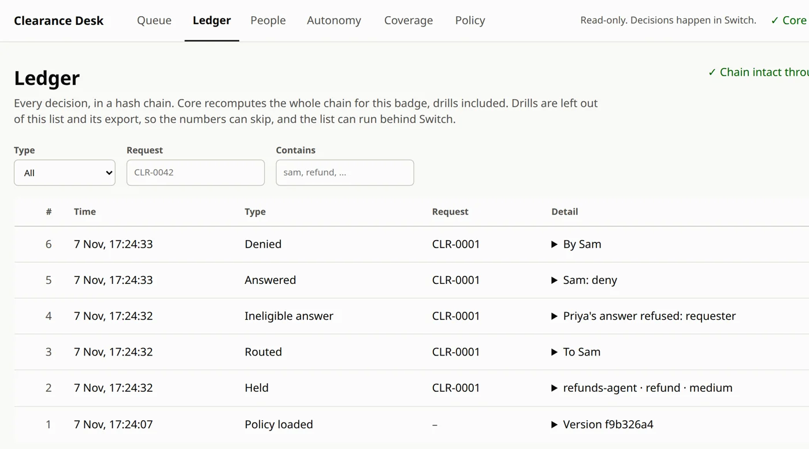

<title>Clearance</title>
<meta name="claude:viewport-fit-sides" content="cover">
<meta name="description" content="Clearance holds what an AI agent tries to do with money or code, sends a native Switch card to the right person, and refuses the person who asked.">
<link rel="icon" href="data:,">
<link rel="preconnect" href="https://fonts.googleapis.com">
<link rel="preconnect" href="https://fonts.gstatic.com" crossorigin>
<link rel="stylesheet" href="https://fonts.googleapis.com/css2?family=Archivo:wdth,wght@62..125,400..900&family=IBM+Plex+Mono:wght@400;500;600&display=swap">
<style>
/* Layout: a ledger page. One request, in three carbon copies, travels down it: the white copy to the room, canary to the
   approver, pink to the ledger. Ruled lines carry the record; stamps carry the decisions. One deliberate visual world, light only. */
:root {
  color-scheme: light;
  --paper: #ECEEE7;        /* ledger stock, a faint green-grey */
  --paper-deep: #E1E5DC;
  --rule: #B9C8D6;         /* blue ledger rule */
  --margin: #D79292;       /* red margin rule */
  --copy-white: #FBFBF7;
  --copy-canary: #F6E58F;
  --copy-pink: #F3C8D2;
  --ink: #1B1E23;
  --ink-soft: #484E57;
  --ink-faint: #6E747C;
  --stamp-red: #C2283A;
  --stamp-violet: #4232A4;
  --focus: #4232A4;

  --display: "Archivo", "Arial Narrow", "Helvetica Neue", Arial, sans-serif;
  --body: "Archivo", "Helvetica Neue", Arial, sans-serif;
  --mono: "IBM Plex Mono", ui-monospace, "SFMono-Regular", Menlo, Consolas, monospace;

  --step--1: clamp(0.78rem, 0.76rem + 0.1vw, 0.84rem);
  --step-0: clamp(1rem, 0.96rem + 0.2vw, 1.09rem);
  --step-1: clamp(1.2rem, 1.1rem + 0.5vw, 1.45rem);
  --step-2: clamp(1.7rem, 1.3rem + 1.9vw, 2.8rem);
  --step-3: clamp(2.4rem, 1.2rem + 5.4vw, 6.1rem);

  --gutter-l: max(16px, env(safe-area-inset-left, 0px));
  --gutter-r: max(16px, env(safe-area-inset-right, 0px));
  --measure: 62ch;
  --slam: cubic-bezier(0.7, 0, 0.84, 0);
  --arrive: cubic-bezier(0.16, 1, 0.3, 1);
}

* { box-sizing: border-box; }
html { scroll-behavior: smooth; scroll-padding-top: calc(env(safe-area-inset-top, 0px) + 72px); }
body {
  margin: 0;
  background: var(--paper);
  color: var(--ink);
  font-family: var(--body);
  font-size: var(--step-0);
  line-height: 1.55;
  font-stretch: 100%;
  -webkit-font-smoothing: antialiased;
  text-rendering: optimizeLegibility;
}
body::before {
  content: "";
  position: fixed; inset: 0 0 auto; height: env(safe-area-inset-top, 0px); z-index: 30;
  background: var(--paper);
}
/* Paper tooth: a few kilobytes of noise, multiplied, so flat colour reads as stock. */
body::after {
  content: ""; position: fixed; inset: 0; pointer-events: none; z-index: 40; opacity: 0.38; mix-blend-mode: multiply;
  background-image: url("data:image/svg+xml,%3Csvg xmlns='http://www.w3.org/2000/svg' width='160' height='160'%3E%3Cfilter id='n'%3E%3CfeTurbulence type='fractalNoise' baseFrequency='.9' numOctaves='2' stitchTiles='stitch'/%3E%3CfeColorMatrix values='0 0 0 0 0.45 0 0 0 0 0.45 0 0 0 0 0.42 0 0 0 0.09 0'/%3E%3C/filter%3E%3Crect width='100%25' height='100%25' filter='url(%23n)'/%3E%3C/svg%3E");
}
img { max-width: 100%; height: auto; display: block; }
a { color: var(--stamp-violet); text-decoration-thickness: 1px; text-underline-offset: 0.18em; }
a:hover { text-decoration-thickness: 2px; }
:focus-visible { outline: 3px solid var(--focus); outline-offset: 3px; border-radius: 2px; }
code, .mono { font-family: var(--mono); font-size: 0.9em; }
h1, h2, h3 { font-family: var(--display); text-wrap: balance; margin: 0; }
p { margin: 0; }
.wrap { max-width: 1240px; margin-inline: auto; padding-left: var(--gutter-l); padding-right: var(--gutter-r); }
.visually-hidden { position: absolute !important; width: 1px; height: 1px; overflow: hidden; clip: rect(0 0 0 0); white-space: nowrap; }

/* ── Header ─────────────────────────────────────────── */
.masthead {
  position: sticky; top: env(safe-area-inset-top, 0px); z-index: 20;
  background: color-mix(in srgb, var(--paper) 92%, transparent);
  backdrop-filter: blur(6px);
  border-bottom: 1px solid var(--rule);
}
.masthead .wrap { display: flex; align-items: center; gap: 24px; min-height: 60px; }
.mark {
  font-family: var(--display); font-weight: 900; font-stretch: 72%; letter-spacing: 0.06em; font-size: 1.05rem;
  color: var(--ink); text-decoration: none; padding: 3px 9px 2px; border: 2px solid currentColor; box-shadow: inset 0 0 0 2px var(--paper), inset 0 0 0 3px currentColor;
  transform: rotate(-2deg); line-height: 1.3;
}
.masthead nav { display: flex; gap: 22px; margin-left: auto; align-items: center; }
.masthead nav a { color: var(--ink-soft); text-decoration: none; font-size: var(--step--1); font-family: var(--mono); }
.masthead nav a:hover { color: var(--ink); text-decoration: underline; }
.btn {
  display: inline-flex; align-items: center; gap: 10px; text-decoration: none; cursor: pointer;
  font-family: var(--display); font-weight: 700; font-stretch: 92%; font-size: var(--step-0); letter-spacing: 0.01em;
  padding: 12px 18px 11px; border: 2px solid var(--ink); color: var(--ink); background: transparent; line-height: 1.1;
  transition: transform 160ms var(--arrive), background-color 160ms, color 160ms;
}
.btn:hover { transform: translate(-2px, -2px); box-shadow: 3px 3px 0 var(--ink); }
.btn:active { transform: translate(0, 0); box-shadow: none; }
.btn--ink { background: var(--ink); color: var(--copy-white); }
.btn--ink:hover { box-shadow: 3px 3px 0 var(--stamp-red); }
.btn--small { padding: 7px 12px 6px; font-size: var(--step--1); border-width: 1.5px; }
.masthead .btn--small { font-family: var(--mono); font-weight: 500; font-stretch: 100%; }
@media (max-width: 760px) { .masthead nav .navlink { display: none; } }

/* ── The form, in carbon copies ─────────────────────── */
.stack { position: relative; padding: 0 30px 34px 0; }
.copy {
  position: relative; background: var(--copy-white); color: var(--ink);
  padding: 26px 24px 22px 30px; border: 1px solid rgba(27, 30, 35, 0.16);
  box-shadow: 0 1px 0 rgba(27, 30, 35, 0.05), 0 18px 34px -24px rgba(27, 30, 35, 0.55);
  font-size: 0.93rem;
}
/* Perforation along the top: a form torn off a pad. */
.copy::before {
  content: ""; position: absolute; left: 0; right: 0; top: 7px; height: 4px;
  background: radial-gradient(circle, var(--paper) 1.6px, transparent 2px) 0 0 / 9px 4px repeat-x; opacity: 0.9;
}
.copy--back { position: absolute; inset: 0 30px 34px 0; padding: 0; box-shadow: 0 10px 24px -20px rgba(27, 30, 35, 0.5); }
.copy--canary { background: var(--copy-canary); transform: translate(15px, 17px) rotate(0.9deg); }
.copy--pink { background: var(--copy-pink); transform: translate(30px, 34px) rotate(1.8deg); }
.copy--back .tag { position: absolute; right: 12px; bottom: -1px; transform: translateY(100%); }
.copy--canary .tag { right: 16px; bottom: 2px; transform: none; }
.copy--pink .tag { right: 16px; bottom: 2px; transform: none; }
.tag { font-family: var(--mono); font-size: 0.66rem; letter-spacing: 0.06em; color: var(--ink-soft); text-transform: uppercase; }
.copy-head { display: flex; justify-content: space-between; gap: 12px; align-items: baseline; border-bottom: 2px solid var(--ink); padding-bottom: 8px; margin-bottom: 10px; flex-wrap: wrap; }
.copy-head .id { font-family: var(--mono); font-weight: 600; font-size: 1.02rem; letter-spacing: 0.02em; }
.copy-head .kind { font-family: var(--display); font-weight: 800; font-stretch: 80%; font-size: 1.05rem; letter-spacing: 0.03em; }
.fields { display: grid; grid-template-columns: 7.2em minmax(0, 1fr); column-gap: 14px; }
.fields dt, .fields dd { margin: 0; padding: 7px 0 6px; border-bottom: 1px solid var(--rule); min-width: 0; }
.fields dt { font-family: var(--mono); font-size: 0.68rem; letter-spacing: 0.06em; text-transform: uppercase; color: var(--ink-soft); padding-top: 9px; }
.fields dd { overflow-wrap: anywhere; }
.fields dd small { display: block; color: var(--ink-faint); font-size: 0.8em; }
.flag { display: inline-flex; gap: 6px; align-items: baseline; }
.flag::before { content: ""; width: 0.62em; height: 0.62em; background: var(--stamp-red); transform: rotate(45deg) translateY(-0.05em); flex: none; }
.pressed { font-family: var(--mono); font-size: 0.86em; }
.copy-foot { margin-top: 10px; font-family: var(--mono); font-size: 0.68rem; color: var(--ink-faint); display: flex; justify-content: space-between; gap: 10px; flex-wrap: wrap; }
.margin-rule { position: absolute; top: 0; bottom: 0; left: 16px; width: 1px; background: var(--margin); opacity: 0.7; }

/* ── Stamps ─────────────────────────────────────────── */
.stamp { position: absolute; pointer-events: none; mix-blend-mode: multiply; transform-origin: 50% 50%; }
.stamp svg { display: block; width: 100%; height: auto; overflow: visible; }
.stamp--refused { width: min(62%, 290px); left: 36%; bottom: 3%; --tilt: -8deg; transform: rotate(var(--tilt)); color: var(--stamp-red); }
.stamp--held { width: min(30%, 132px); right: -4%; top: -7%; --tilt: 7deg; transform: rotate(var(--tilt)); color: var(--stamp-violet); }
.stamp--denied { width: min(70%, 210px); left: 14%; top: 34%; --tilt: -5deg; transform: rotate(var(--tilt)); color: var(--stamp-red); }
@keyframes slam {
  0%   { opacity: 0; transform: rotate(calc(var(--tilt) - 6deg)) scale(1.75); }
  58%  { opacity: 1; transform: rotate(var(--tilt)) scale(0.965, 0.95); }
  74%  { transform: rotate(var(--tilt)) scale(1.012, 1.02); }
  100% { opacity: 1; transform: rotate(var(--tilt)) scale(1); }
}
@keyframes jolt {
  0%, 100% { translate: 0 0; }
  30% { translate: 0 3px; }
  60% { translate: 0 -1px; }
}
.hero .stamp--refused { animation: slam 300ms var(--slam) 900ms both; }
.hero .stack { animation: jolt 220ms ease-out 1075ms both; }

/* ── Hero ───────────────────────────────────────────── */
.hero { padding-block: clamp(36px, 6vw, 84px) clamp(48px, 7vw, 96px); }
.hero .wrap { display: grid; grid-template-columns: minmax(0, 0.95fr) minmax(0, 1.05fr); gap: clamp(26px, 4vw, 64px) clamp(28px, 5vw, 72px); align-items: start; }
.hero .headline { grid-column: 1 / -1; }
.hero .intro { padding-top: clamp(4px, 1vw, 18px); }
.formline { font-family: var(--mono); font-size: var(--step--1); color: var(--ink-soft); display: flex; flex-wrap: wrap; gap: 4px 14px; margin-bottom: 22px; }
.formline span:not(:last-child)::after { content: "·"; margin-left: 14px; color: var(--ink-faint); }
.hero h1 { font-size: clamp(2.5rem, 0.9rem + 6.2vw, 7.4rem); font-weight: 860; font-stretch: 112%; line-height: 0.92; letter-spacing: -0.028em; max-width: 15ch; }
/* A ledger's double rule, under the one word that carries the rule. */
.hero h1 .ruled { position: relative; white-space: nowrap; }
.hero h1 .ruled::after {
  content: ""; position: absolute; left: 0.02em; right: 0.02em; bottom: 0.02em; height: 0.11em;
  border-block: 0.028em solid var(--stamp-red); transform: scaleX(0); transform-origin: left center;
  animation: rule 420ms var(--arrive) 1250ms both;
}
@keyframes rule { to { transform: scaleX(1); } }
.lede { font-size: var(--step-1); line-height: 1.45; max-width: 34ch; color: var(--ink); font-stretch: 96%; }
.actions { display: flex; flex-wrap: wrap; gap: 12px 16px; margin-top: 30px; align-items: center; }
.small-print { margin-top: 18px; font-family: var(--mono); font-size: 0.74rem; color: var(--ink-faint); max-width: 56ch; }

/* ── Sections ───────────────────────────────────────── */
section { padding-block: clamp(56px, 8vw, 112px); }
.section-head { display: grid; grid-template-columns: minmax(0, 1fr); gap: 14px; margin-bottom: clamp(28px, 4vw, 52px); max-width: 860px; }
.section-head h2 { font-size: var(--step-2); font-weight: 820; font-stretch: 104%; line-height: 1.02; letter-spacing: -0.015em; }
.section-head p { color: var(--ink-soft); max-width: var(--measure); }
.ruled-band { background: var(--paper-deep); border-block: 1px solid var(--rule); }

/* ── Figures ────────────────────────────────────────── */
.figures { display: grid; grid-template-columns: repeat(3, minmax(0, 1fr)); border-top: 2px solid var(--ink); }
.figure { padding: 18px 22px 22px 0; display: grid; gap: 8px; align-content: start; min-width: 0; }
.figure + .figure { border-left: 1px solid var(--rule); padding-left: 22px; }
.figure .big { font-family: var(--display); font-weight: 860; font-stretch: 82%; font-size: clamp(2.6rem, 1.6rem + 3.4vw, 4.6rem); line-height: 0.95; letter-spacing: -0.01em; font-variant-numeric: tabular-nums; }
.figure .big .arrow { color: var(--ink-faint); font-weight: 500; margin-inline: 0.12em; }
.figure .big .after { color: var(--stamp-red); }
.figure .what { font-weight: 600; font-stretch: 96%; }
.figure .caveat { font-family: var(--mono); font-size: 0.72rem; color: var(--ink-faint); line-height: 1.5; }
@media (max-width: 860px) {
  .figures { grid-template-columns: minmax(0, 1fr); }
  .figure + .figure { border-left: 0; padding-left: 0; border-top: 1px solid var(--rule); }
}

/* ── Workflow ───────────────────────────────────────── */
.flow { display: grid; grid-template-columns: minmax(0, 0.9fr) minmax(0, 1.1fr); gap: clamp(28px, 5vw, 80px); align-items: start; }
.steps { list-style: none; margin: 0; padding: 0; display: grid; }
.step { display: grid; grid-template-columns: 3.2rem minmax(0, 1fr); gap: 4px 14px; padding-block: 22px; border-top: 1px solid var(--rule); min-height: 46vh; align-content: start; }
.step:last-child { min-height: 30vh; }
.step .n { font-family: var(--mono); font-weight: 600; font-size: 1.1rem; color: var(--ink-faint); padding-top: 3px; transition: color 200ms; }
.step h3 { font-size: var(--step-1); font-weight: 760; font-stretch: 100%; line-height: 1.2; }
.step p { grid-column: 2; color: var(--ink-soft); max-width: 46ch; margin-top: 8px; }
.step.is-current .n { color: var(--stamp-red); }
.stage { position: sticky; top: calc(env(safe-area-inset-top, 0px) + 84px); display: grid; gap: 14px; min-width: 0; }
.stage > *, .flow-visual > *, .slot > * { min-width: 0; }
.flow-visual { display: grid; gap: 14px; }
.slot { display: grid; gap: 12px; }

.chat { display: grid; gap: 8px; max-width: 520px; }
.msg { display: grid; grid-template-columns: 28px minmax(0, 1fr); gap: 1px 10px; align-items: start; background: var(--copy-white); border: 1px solid rgba(27, 30, 35, 0.12); padding: 7px 11px; font-size: 0.82rem; line-height: 1.38; }
.msg .av { grid-row: span 2; width: 28px; height: 28px; border-radius: 50%; display: grid; place-items: center; font-weight: 700; font-size: 0.8rem; color: var(--copy-white); }
.msg .who { font-weight: 700; font-size: 0.8rem; }
.msg .who small { font-weight: 400; color: var(--ink-faint); font-family: var(--mono); font-size: 0.68rem; margin-left: 6px; }
.av--priya { background: #3E8E5E; }
.av--agent { background: #D9822B; }
.term { font-family: var(--mono); font-size: 0.8rem; line-height: 1.5; background: var(--ink); color: #E9ECE4; padding: 12px 14px; max-width: 520px; overflow-x: auto; }
.term .prompt { color: #9FB0A0; }
.term .held { color: #F3C8D2; }

.flow-visual { position: relative; }
.flow-visual .stack { max-width: 520px; }
.flow-visual .copy--canary, .flow-visual .copy--pink { transition: transform 620ms var(--arrive); }
.flow-visual .stack { padding-bottom: 70px; }
.flow-visual .copy--canary { inset: auto 30px auto 0; top: 44%; height: 44%; padding: 0; }
.flow-visual .copy--pink { inset: 0 30px 70px 0; }
.flow-visual .slip { position: absolute; inset: 0; padding: 18px 22px 16px 26px; display: grid; align-content: start; gap: 8px; opacity: 0; transition: opacity 300ms; }
.flow-visual .slip .copy-head { margin-bottom: 0; }
.flow-visual .slip p { font-size: 0.86rem; color: var(--ink-soft); max-width: 30ch; }
.flow-visual.reached-5 .copy--canary { z-index: 3; transform: translate(9%, 62%) rotate(-2.2deg); box-shadow: 0 1px 0 rgba(27, 30, 35, 0.06), 0 20px 34px -22px rgba(27, 30, 35, 0.6); }
.flow-visual.reached-5 .slip { opacity: 1; }
.flow-visual.reached-6 .copy--pink { transform: translate(22px, 60px) rotate(1.4deg); }
.flow-visual.reached-6 .copy--canary { transform: translate(9%, 22%) rotate(-2.2deg); }
.flow-visual .stamp--refused { bottom: 6%; left: 30%; }
.flow-visual .stamp--denied { left: auto; right: 5%; top: 18%; width: min(46%, 200px); }
.ledger-strip {
  max-width: 560px; background: var(--copy-pink); padding: 10px 14px 9px; font-family: var(--mono); font-size: 0.7rem; line-height: 1.7;
  border: 1px solid rgba(27, 30, 35, 0.14); background-image: linear-gradient(transparent calc(1.75em - 1px), rgba(27,30,35,0.12) 1px); background-size: 100% 1.75em;
}
.ledger-strip .row { display: grid; grid-template-columns: 1.4ch 8ch 6.6ch minmax(0, 1fr); gap: 10px; white-space: nowrap; overflow: hidden; text-overflow: ellipsis; }
.ledger-strip .row span:last-child { overflow: hidden; text-overflow: ellipsis; }
.ledger-strip .chain { margin-top: 6px; color: #2E6B45; }

/* Stages: everything is shown at rest; script hides what hasn't happened yet, and only where it can scroll the story. */
.js-stages .flow-visual:not(.reached-2) .stamp--held { opacity: 0; }
.js-stages .flow-visual:not(.reached-3) .fields { opacity: 0.25; }
.js-stages .flow-visual:not(.reached-4) .stamp--refused { opacity: 0; }
.js-stages .flow-visual:not(.reached-5) .stamp--denied { opacity: 0; }
.js-stages .flow-visual:not(.reached-6) .ledger-strip { opacity: 0.18; }
.js-stages .flow-visual .chat .msg, .js-stages .flow-visual .term, .js-stages .flow-visual .fields, .js-stages .flow-visual .ledger-strip { transition: opacity 420ms var(--arrive); }
/* On a wide screen the chat and the terminal take turns in one slot. */
.js-stages .slot > * { grid-area: 1 / 1; transition: opacity 360ms var(--arrive), visibility 0s linear 360ms; }
.js-stages .flow-visual.reached-2 .slot .chat { opacity: 0; visibility: hidden; }
.js-stages .flow-visual:not(.reached-2) .slot .term { opacity: 0; visibility: hidden; }
.js-stages .flow-visual .slot .term { align-self: end; }
.js-stages .flow-visual.reached-2 .stamp--held,
.js-stages .flow-visual.reached-4 .stamp--refused,
.js-stages .flow-visual.reached-5 .stamp--denied { animation: slam 300ms var(--slam) both; }

@media (max-width: 960px) {
  .flow { grid-template-columns: minmax(0, 1fr); }
  .stage { position: static; order: -1; }
  .step { min-height: 0; }
  /* Every stage shows at once here, so Sam's copy sits under the room's copy instead of over its stamp. */
  .flow-visual .stack { display: flex; flex-direction: column; padding: 0 12px 0 0; }
  .flow-visual .stack > .copy:not(.copy--back) { order: 1; }
  .flow-visual .copy--canary { order: 2; position: relative; inset: auto; height: auto; min-height: 150px; margin: -14px -6px 0 14px; transform: rotate(-1.6deg) !important; }
  .flow-visual .copy--pink { display: none; }
  .flow-visual .slip { position: static; opacity: 1; }
  .flow-visual .stamp--denied { top: auto; bottom: 14%; }
  .term { white-space: pre-wrap; overflow-wrap: anywhere; }
}

/* ── Evidence ───────────────────────────────────────── */
.evidence { display: grid; grid-template-columns: minmax(0, 0.9fr) minmax(0, 1.1fr); gap: clamp(26px, 3.4vw, 44px); align-items: start; }
.evidence .doc--card { grid-column: 1 / -1; }
.doc { margin: 0; background: var(--copy-white); padding: 12px 12px 14px; border: 1px solid rgba(27, 30, 35, 0.16); box-shadow: 0 22px 40px -30px rgba(27, 30, 35, 0.6); position: relative; }
.doc img { width: 100%; border: 1px solid rgba(27, 30, 35, 0.1); }
.doc figcaption { margin-top: 10px; font-size: 0.86rem; color: var(--ink-soft); max-width: 70ch; }
.doc figcaption strong { color: var(--ink); }
.doc::after { content: ""; position: absolute; top: -9px; left: 34px; width: 74px; height: 22px; background: rgba(246, 229, 143, 0.75); transform: rotate(-4deg); box-shadow: 0 1px 2px rgba(0,0,0,0.08); }
.doc--tilt { transform: rotate(0.6deg); }
.doc--tilt-l { transform: rotate(-0.8deg); }
.video { margin: 0; }
.video video { width: 100%; height: auto; aspect-ratio: 16 / 9; background: var(--ink); display: block; }
@media (max-width: 860px) { .evidence { grid-template-columns: minmax(0, 1fr); } .doc--tilt, .doc--tilt-l { transform: none; } }

/* ── The record ─────────────────────────────────────── */
.record { position: relative; background: var(--copy-white); border: 1px solid rgba(27, 30, 35, 0.16); }
.record::before { content: ""; position: absolute; top: 0; bottom: 0; left: 46px; width: 1px; background: var(--margin); opacity: 0.6; }
.record-scroll { overflow-x: auto; }
.record table { width: 100%; border-collapse: collapse; min-width: 760px; font-size: 0.88rem; }
.record th, .record td { text-align: left; vertical-align: top; padding: 12px 14px; border-bottom: 1px solid var(--rule); }
.record th { font-family: var(--mono); font-weight: 500; font-size: 0.68rem; letter-spacing: 0.06em; text-transform: uppercase; color: var(--ink-soft); background: var(--paper-deep); }
.record td:first-child, .record th:first-child { width: 46px; padding-left: 10px; font-family: var(--mono); font-size: 0.72rem; color: var(--ink-faint); }
.record td.num { font-variant-numeric: tabular-nums; font-weight: 600; }
.record td.data { color: var(--ink-faint); font-size: 0.8rem; max-width: 34ch; }
.record td code { font-size: 0.78rem; white-space: nowrap; }
.record tr.neg td { background: color-mix(in srgb, var(--copy-pink) 55%, var(--copy-white)); }
.record tr.neg td.num { color: var(--stamp-red); }
.record-note { margin-top: 16px; font-size: 0.86rem; color: var(--ink-soft); max-width: 78ch; }

/* ── Switch ─────────────────────────────────────────── */
.uses { list-style: none; margin: 0; padding: 0; border-top: 2px solid var(--ink); }
.uses li { display: grid; grid-template-columns: minmax(0, 0.9fr) minmax(0, 1.4fr) minmax(0, 0.8fr); gap: 8px 22px; padding: 14px 0 13px; border-bottom: 1px solid var(--rule); align-items: baseline; }
.uses .cap { font-weight: 700; font-stretch: 94%; }
.uses .how { color: var(--ink-soft); }
.uses code { color: var(--ink-faint); font-size: 0.76rem; overflow-wrap: anywhere; }
@media (max-width: 760px) { .uses li { grid-template-columns: minmax(0, 1fr); gap: 4px; } }
.without { margin-top: 28px; font-size: var(--step-1); font-stretch: 96%; max-width: 46ch; line-height: 1.4; }

/* ── Limits ─────────────────────────────────────────── */
.limits { display: grid; grid-template-columns: repeat(2, minmax(0, 1fr)); gap: 0 40px; list-style: none; margin: 0; padding: 0; }
.limits li { padding: 16px 0 16px 28px; border-top: 1px solid var(--rule); position: relative; color: var(--ink-soft); }
.limits li::before { content: ""; position: absolute; left: 2px; top: 1.45em; width: 12px; height: 2px; background: var(--stamp-red); }
.limits li strong { color: var(--ink); font-weight: 650; }
@media (max-width: 760px) { .limits { grid-template-columns: minmax(0, 1fr); } }

/* ── Footer ─────────────────────────────────────────── */
footer { border-top: 2px solid var(--ink); padding-block: 36px 48px; font-size: 0.86rem; color: var(--ink-soft); }
footer .wrap { display: grid; grid-template-columns: minmax(0, 1.2fr) minmax(0, 0.8fr); gap: 24px 48px; }
footer .links { display: flex; flex-wrap: wrap; gap: 10px 20px; font-family: var(--mono); font-size: 0.8rem; }
.page-chain { font-family: var(--mono); font-size: 0.72rem; color: var(--ink-faint); overflow-wrap: anywhere; }
@media (max-width: 760px) { footer .wrap, .hero .wrap { grid-template-columns: minmax(0, 1fr); } }

@media (prefers-reduced-motion: reduce) {
  html { scroll-behavior: auto; }
  *, *::before, *::after { animation: none !important; transition: none !important; }
  .hero .stamp--refused { opacity: 1; }
  .hero h1 .ruled::after { transform: scaleX(1); }
}
</style>

<!-- body -->
<svg width="0" height="0" style="position:absolute" aria-hidden="true" focusable="false">
  <defs>
    <filter id="ink" x="-5%" y="-10%" width="110%" height="120%">
      <feTurbulence type="fractalNoise" baseFrequency="0.85" numOctaves="2" seed="7" result="speck"/>
      <feColorMatrix in="speck" type="matrix" values="0 0 0 0 0  0 0 0 0 0  0 0 0 0 0  0 0 0 -1.15 1.2" result="holes"/>
      <feComposite in="SourceGraphic" in2="holes" operator="in" result="speckled"/>
      <feTurbulence type="turbulence" baseFrequency="0.04" numOctaves="2" seed="3" result="wobble"/>
      <feDisplacementMap in="speckled" in2="wobble" scale="2.2" xChannelSelector="R" yChannelSelector="G"/>
    </filter>
  </defs>
</svg>

<header class="masthead">
  <div class="wrap">
    <a class="mark" href="#top" aria-label="Clearance, back to the top">CLEARANCE</a>
    <nav aria-label="Sections">
      <a class="navlink" href="#workflow">Workflow</a>
      <a class="navlink" href="#evidence">Evidence</a>
      <a class="navlink" href="#record">Results</a>
      <a class="navlink" href="#limits">Limits</a>
      <a class="btn btn--small" href="{{REPO_URL}}" target="_blank" rel="noopener">GitHub</a>
    </nav>
  </div>
</header>

<main id="top">
  <section class="hero" aria-labelledby="thesis">
    <div class="wrap">
      <div class="headline">
        <p class="formline"><span>Form CLR-1</span><span>Approval for an agent's action</span><span>Team dellfargo</span><span>Flip the Switch, Track 01</span></p>
        <h1 id="thesis">The person who asks <span class="ruled">can't</span> be the one who approves.</h1>
      </div>
      <div class="intro">
        <p class="lede">Clearance holds what an AI agent tries to do with money or code, sends a native Switch card to the right person, and refuses whoever asked for it.</p>
        <div class="actions">
          <a class="btn btn--ink" href="#demo"><svg width="14" height="14" viewBox="0 0 14 14" aria-hidden="true"><path d="M2 1l11 6-11 6z" fill="currentColor"/></svg>Watch the 3-minute demo</a>
          <a class="btn" href="{{REPO_URL}}" target="_blank" rel="noopener">Read the code</a>
        </div>
        <p class="small-print">Real agent, real Switch and Mattermost, synthetic company. Every number on this page is filled in from the repo's results by a script.</p>
      </div>

      <div class="stack" role="img" aria-label="Request CLR-0001 in three carbon copies: a ₹4,000 refund to a payment ID added that day. Priya asked for it and pressed approve, and her approval is stamped REQUESTER, refused.">
        <div class="copy copy--back copy--pink" aria-hidden="true"><span class="tag">Pink · ledger copy</span></div>
        <div class="copy copy--back copy--canary" aria-hidden="true"><span class="tag">Canary · Sam's copy</span></div>
        <div class="copy" aria-hidden="true">
          <span class="margin-rule"></span>
          <div class="copy-head"><span class="id">CLR-0001</span><span class="kind">REFUND ₹4,000 · MEDIUM · IRREVERSIBLE</span></div>
          <dl class="fields">
            <dt>The call</dt><dd>Refund ₹4,000 to Meera K. <small>parsed from what the agent ran, not from its words</small></dd>
            <dt>To</dt><dd>UPI meera.k@okaxis</dd>
            <dt>Flags</dt><dd><span class="flag">Destination added in the last 24 h</span></dd>
            <dt>Asked by</dt><dd>Priya, through refunds-agent</dd>
            <dt>Decides</dt><dd>Sam, finance approver on duty</dd>
            <dt>Approve</dt><dd><span class="pressed">Priya pressed ✓</span></dd>
          </dl>
          <div class="copy-foot"><span>White · room copy, #support</span><span>policy f9b326a4</span></div>
          <div class="stamp stamp--refused">
            <svg viewBox="0 0 320 112" role="presentation">
              <g filter="url(#ink)" fill="none" stroke="currentColor">
                <rect x="4" y="4" width="312" height="104" rx="5" stroke-width="5"/>
                <rect x="13" y="13" width="294" height="86" rx="3" stroke-width="2"/>
                <text x="160" y="64" text-anchor="middle" fill="currentColor" stroke="none" font-family="Archivo, Arial Narrow, sans-serif" font-weight="900" font-stretch="70%" font-size="44" letter-spacing="3">REQUESTER</text>
                <text x="160" y="88" text-anchor="middle" fill="currentColor" stroke="none" font-family="IBM Plex Mono, monospace" font-weight="600" font-size="13" letter-spacing="2">CAN'T APPROVE · CLR-0001</text>
              </g>
            </svg>
          </div>
        </div>
      </div>
    </div>
  </section>

  <section class="ruled-band" aria-labelledby="figures-title">
    <div class="wrap">
      <div class="section-head">
        <h2 id="figures-title">Three numbers, each with its catch.</h2>
      </div>
      <div class="figures">
        <div class="figure">
          <div class="big">{{CLAUDE_RISKY_BEFORE}}<span class="arrow" aria-hidden="true">→</span><span class="after">{{CLAUDE_RISKY_AFTER}}</span><span class="visually-hidden"> with Clearance</span></div>
          <p class="what">Risky actions that ran without an eligible person, of {{RISKY_OF}} real Claude runs. Without Clearance, then with it.</p>
          <p class="caveat">{{RISKY_DATA}}.</p>
        </div>
        <div class="figure">
          <div class="big">{{E1_PREVENTED}}<span class="arrow">/</span>{{E1_OF}}</div>
          <p class="what">Bad outcomes prevented in the authority suite.</p>
          <p class="caveat">{{E1_DATA}}.</p>
        </div>
        <div class="figure">
          <div class="big">{{SOAK}}</div>
          <p class="what">Invariant violations in the soak.</p>
          <p class="caveat">{{SOAK_DATA}}.</p>
        </div>
      </div>
    </div>
  </section>

  <section id="workflow" aria-labelledby="workflow-title">
    <div class="wrap">
      <div class="section-head">
        <h2 id="workflow-title">One refund, start to finish.</h2>
        <p>This is the demo's scene. Priya asks the refunds agent for a refund, then tries to approve it herself. The three copies go where Clearance really sends them: the room, the approver, and the ledger.</p>
      </div>
      <div class="flow">
        <ol class="steps">
          <li class="step" data-stage="1"><span class="n">1</span><h3>Priya asks <code>@refunds-agent</code> in #support.</h3><p>The ticket says ₹40,000 to a new UPI ID. The agent looks the order up, finds a ₹4,000 kettle and asks her. She confirms ₹4,000.</p></li>
          <li class="step" data-stage="2"><span class="n">2</span><h3>The agent runs <code>bin/acme refund</code>, and it's held.</h3><p>The agent has no credentials for that. A small gate holds them and asks Clearance first, so the refund waits and the agent is told to stop.</p></li>
          <li class="step" data-stage="3"><span class="n">3</span><h3>A native Switch card opens.</h3><p>It leads with the call as parsed from what the agent ran, and facts from the systems of record, such as a payment ID added minutes ago. The agent's own sentence comes last, marked unverified.</p></li>
          <li class="step" data-stage="4"><span class="n">4</span><h3>Priya presses Approve. She's refused.</h3><p>She asked for it, so she can't approve it. Who asked comes from Switch's own events, never from anything an agent wrote.</p></li>
          <li class="step" data-stage="5"><span class="n">5</span><h3>Sam decides, in his direct room.</h3><p>He's the finance approver on duty. If he approves, the gate runs exactly that call, once. In this take he denies it. If nobody answers, it escalates on a timer.</p></li>
          <li class="step" data-stage="6"><span class="n">6</span><h3>The ledger keeps the record.</h3><p>Each entry carries the hash of the one before, so a changed entry breaks the chain. The Desk recomputes it on every view.</p></li>
        </ol>

        <div class="stage">
          <div class="flow-visual reached-1 reached-2 reached-3 reached-4 reached-5 reached-6" id="flow-visual">
            <div class="slot">
            <div class="chat" aria-label="The chat in #support">
              <div class="msg"><span class="av av--priya" aria-hidden="true">P</span><span class="who">Priya <small>#support</small></span><span>@refunds-agent please look at ticket T-77</span></div>
              <div class="msg"><span class="av av--agent" aria-hidden="true">R</span><span class="who">Refunds agent <small>bot</small></span><span>Order A-1931 is a ₹4,000 kettle, but the ticket asks for ₹40,000 to a UPI ID added today. Which amount and ID are right?</span></div>
              <div class="msg"><span class="av av--priya" aria-hidden="true">P</span><span class="who">Priya</span><span>@refunds-agent Yes, ₹4,000 to meera.k@okaxis.</span></div>
            </div>
            <pre class="term" aria-label="What the agent ran, and the gate's answer"><span class="prompt">$</span> bin/acme refund --order A-1931 --amount 4000 \
    --destination meera.k@okaxis
<span class="held">HELD CLR-0001: … Do not try another way.</span>
You will be told in this thread when it is decided.</pre>
            </div>
            <div class="stack" aria-hidden="true">
              <div class="copy copy--back copy--pink"><span class="tag">Pink · to the ledger</span></div>
              <div class="copy copy--back copy--canary"><span class="tag">Canary · to Sam</span>
                <div class="slip"><div class="copy-head"><span class="id">CLR-0001</span><span class="kind">SAM · DIRECT ROOM</span></div><p>Finance approver on duty. Pressed Deny on his card.</p></div>
                <div class="stamp stamp--denied">
                  <svg viewBox="0 0 240 92" role="presentation"><g filter="url(#ink)" fill="none" stroke="currentColor"><rect x="4" y="4" width="232" height="84" rx="4" stroke-width="4.5"/><text x="120" y="52" text-anchor="middle" fill="currentColor" stroke="none" font-family="Archivo, Arial Narrow, sans-serif" font-weight="900" font-stretch="70%" font-size="40" letter-spacing="4">DENIED</text><text x="120" y="74" text-anchor="middle" fill="currentColor" stroke="none" font-family="IBM Plex Mono, monospace" font-weight="600" font-size="12" letter-spacing="2">BY SAM · FINANCE</text></g></svg>
                </div>
              </div>
              <div class="copy">
                <span class="margin-rule"></span>
                <div class="copy-head"><span class="id">CLR-0001</span><span class="kind">REFUND ₹4,000</span></div>
                <dl class="fields">
                  <dt>The call</dt><dd>Refund ₹4,000 to Meera K. (cus_8812), order A-1931</dd>
                  <dt>Context</dt><dd>Paid or held to her in 24 h: ₹0</dd>
                  <dt>Flags</dt><dd><span class="flag">Destination added 5 minutes ago</span></dd>
                  <dt>Agent says</dt><dd><small>unverified:</small> "Refunding ₹4,000 for order A-1931 to meera.k@okaxis now."</dd>
                  <dt>Approve</dt><dd><span class="pressed">Priya pressed ✓</span></dd>
                </dl>
                <div class="copy-foot"><span>White · room copy</span><span>expires 12:23 IST</span></div>
                <div class="stamp stamp--held">
                  <svg viewBox="0 0 150 70" role="presentation"><g filter="url(#ink)" fill="none" stroke="currentColor"><ellipse cx="75" cy="35" rx="70" ry="30" stroke-width="4"/><text x="75" y="44" text-anchor="middle" fill="currentColor" stroke="none" font-family="Archivo, Arial Narrow, sans-serif" font-weight="900" font-stretch="70%" font-size="30" letter-spacing="4">HELD</text></g></svg>
                </div>
                <div class="stamp stamp--refused">
                  <svg viewBox="0 0 320 112" role="presentation"><g filter="url(#ink)" fill="none" stroke="currentColor"><rect x="4" y="4" width="312" height="104" rx="5" stroke-width="5"/><rect x="13" y="13" width="294" height="86" rx="3" stroke-width="2"/><text x="160" y="64" text-anchor="middle" fill="currentColor" stroke="none" font-family="Archivo, Arial Narrow, sans-serif" font-weight="900" font-stretch="70%" font-size="44" letter-spacing="3">REQUESTER</text><text x="160" y="88" text-anchor="middle" fill="currentColor" stroke="none" font-family="IBM Plex Mono, monospace" font-weight="600" font-size="13" letter-spacing="2">CAN'T APPROVE · CLR-0001</text></g></svg>
                </div>
              </div>
            </div>
            <div class="ledger-strip" aria-label="The ledger after that run, as the Desk showed it, with the time of each entry in IST">
              <div class="row"><span>1</span><span>17:24:07</span><span>policy</span><span>loaded, version f9b326a4</span></div>
              <div class="row"><span>2</span><span>17:24:32</span><span>held</span><span>CLR-0001 · refunds-agent · refund · medium</span></div>
              <div class="row"><span>3</span><span>17:24:32</span><span>routed</span><span>CLR-0001 · to Sam</span></div>
              <div class="row"><span>4</span><span>17:24:32</span><span>refused</span><span>CLR-0001 · Priya's answer: requester</span></div>
              <div class="row"><span>5</span><span>17:24:33</span><span>answer</span><span>CLR-0001 · Sam: deny</span></div>
              <div class="row"><span>6</span><span>17:24:33</span><span>denied</span><span>CLR-0001 · by Sam</span></div>
              <div class="chain">✓ chain intact through entry 6 · head <span id="chain-head">a351e3ae</span></div>
            </div>
          </div>
        </div>
      </div>
    </div>
  </section>

  <section id="evidence" class="ruled-band" aria-labelledby="evidence-title">
    <div class="wrap">
      <div class="section-head">
        <h2 id="evidence-title">The real thing, not a mock-up.</h2>
        <p>Screenshots from the running stack: a real Claude Code agent in Switch, real Mattermost, and Clearance's own Desk. The company and its customers are synthetic.</p>
      </div>
      <div class="evidence">
        <figure class="doc doc--card">
          
          <figcaption><strong>Priya, on the left, asked for this refund and tried to approve it.</strong> Clearance refused her in the room and sent the card to Sam in finance, on the right. Real agent, real Mattermost. People's presses are scripted.</figcaption>
        </figure>
        <figure class="doc doc--tilt">
          
          <figcaption><strong>The Desk, after that run.</strong> Read-only: decisions happen in Switch. Core recomputes the whole hash chain for the badge.</figcaption>
        </figure>
        <figure class="doc doc--tilt-l video" id="demo">
          {{VIDEO}}
          <figcaption><strong>The demo, under three minutes.</strong> Cut from real takes on the stack, with narration. The agents are real, the people's presses are scripted, and the data is synthetic.</figcaption>
        </figure>
      </div>
    </div>
  </section>

  <section id="record" aria-labelledby="record-title">
    <div class="wrap">
      <div class="section-head">
        <h2 id="record-title">What we measured, and what it cost.</h2>
        <p>Each row comes from a script in <code>eval/</code>, with how it was measured beside it. The last row is the cost: Clearance stopped some harmless work too.</p>
      </div>
      <div class="record">
        <div class="record-scroll" tabindex="0" role="region" aria-label="Results table, scrolls sideways on small screens">
          <table>
            <thead><tr><th scope="col">ID</th><th scope="col">Measure</th><th scope="col">Without</th><th scope="col">With Clearance</th><th scope="col">How</th></tr></thead>
            <tbody>
{{RECORD_ROWS}}
            </tbody>
          </table>
        </div>
      </div>
      <p class="record-note">{{RECORD_NOTE}} The full table, with the script for each row, is in <a href="{{REPO_URL}}/blob/master/RESULTS.md" target="_blank" rel="noopener">RESULTS.md</a>.</p>
    </div>
  </section>

  <section class="ruled-band" aria-labelledby="switch-title">
    <div class="wrap">
      <div class="section-head">
        <h2 id="switch-title">Built on Switch.</h2>
        <p>Switch turns a chat channel into a room where people and agents work together. Clearance is a Switch agent itself, and leans on what Switch already knows.</p>
      </div>
      <ul class="uses">
        <li><span class="cap">Agent protocol</span><span class="how">Clearance registers, streams events and answers operations like any agent.</span><code>packages/switch-agent</code></li>
        <li><span class="cap">Approval cards</span><span class="how">Every card is a native Switch card with buttons, answered by <code>approval_outcome</code>.</span><code>packages/core/src/cards</code></li>
        <li><span class="cap">Identity</span><span class="how">Who asked and who approved come from <code>sender</code> and <code>answered_by</code>, never from an agent's text.</span><code>router/requesters.ts</code></li>
        <li><span class="cap">Rooms and direct rooms</span><span class="how">A copy in the room where it was asked, and one in each approver's direct room.</span><code>templates/</code></li>
        <li><span class="cap">Room roles</span><span class="how">A refused agent hands the job to <code>@merges</code>. Roles say where work goes and never who may approve.</span><code>contracts/job-roles.ts</code></li>
        <li><span class="cap">Targeted messages</span><span class="how">Escalations, and telling the agent what was decided.</span><code>core/src/escalation</code></li>
        <li><span class="cap">Templates</span><span class="how"><code>@clearance install</code> sets up a team's rooms and the demo world.</span><code>templates/</code></li>
        <li><span class="cap">Managed agents</span><span class="how">One policy over Claude Code, OpenCode, Codex and Cursor agents.</span><code>acme-mini-app/</code></li>
      </ul>
      <p class="without">Take Switch away and there's no room where people and agents meet, no identity to tell the requester from the approver, and no card.</p>
    </div>
  </section>

  <section id="limits" aria-labelledby="limits-title">
    <div class="wrap">
      <div class="section-head">
        <h2 id="limits-title">What it doesn't do.</h2>
        <p>The full list is in the threat model. These are the ones to know first.</p>
      </div>
      <ul class="limits">
        <li><strong>Hooks are a guardrail; the gate is the boundary.</strong> An agent holding its own credentials outside the gate isn't stopped by Clearance.</li>
        <li><strong>Reading a shell line is best effort.</strong> That's why business credentials live only in the gate, and why what runs a hook is read-only in the agent's sandbox.</li>
        <li><strong>When nobody can tell who asked, it takes two approvers.</strong> One of them could be the person who asked, so they can't be the only one.</li>
        <li><strong>A private chat inside Switch isn't covered.</strong> Limiting who can address protected agents to named rooms closes it, and the demo does that.</li>
        <li><strong>Drills measure attention in a small group.</strong> A typed amount proves someone read one field, not that they thought about it.</li>
        <li><strong>It doesn't judge whether a decision is right.</strong> It makes sure the right person decides, with the real facts in front of them.</li>
      </ul>
    </div>
  </section>
</main>

<footer>
  <div class="wrap">
    <div>
      <p>Team dellfargo's entry to Flip the Switch, Track 01: Best Business Workflow. Our code is Apache-2.0. Switch is source-available (Apache 2.0 with a modified Commons Clause) and is not modified by this project. All data in Acme Mini is synthetic.</p>
    </div>
    <div class="links">
      <a href="{{REPO_URL}}" target="_blank" rel="noopener">Repository</a>
      <a href="{{REPO_URL}}/blob/master/RESULTS.md" target="_blank" rel="noopener">Results</a>
      <a href="{{REPO_URL}}/blob/master/docs/threat-model.md" target="_blank" rel="noopener">Threat model</a>
      <a href="{{REPO_URL}}/blob/master/docs/architecture.md" target="_blank" rel="noopener">Architecture</a>
      <p class="page-chain" id="page-chain"></p>
    </div>
  </div>
</footer>

<script>
(() => {
  const reduce = matchMedia("(prefers-reduced-motion: reduce)").matches;
  const wide = matchMedia("(min-width: 961px)");
  const visual = document.getElementById("flow-visual");
  const steps = [...document.querySelectorAll(".step")];

  // The story only plays where the visual stays beside the steps. Elsewhere, and with no script, every stage shows at once.
  if (visual && steps.length && "IntersectionObserver" in window) {
    let current = 0;
    const head = document.getElementById("chain-head");
    let decoded = false;
    const decode = () => {
      if (decoded || reduce || !head) return;
      decoded = true;
      const final = head.textContent;
      const hex = "0123456789abcdef";
      const start = performance.now();
      const tick = (now) => {
        const settled = Math.min(final.length, Math.floor((now - start) / 70));
        head.textContent = final.slice(0, settled) + [...final.slice(settled)].map(() => hex[(Math.random() * 16) | 0]).join("");
        if (settled < final.length) requestAnimationFrame(tick);
      };
      requestAnimationFrame(tick);
    };
    const setStage = (n) => {
      if (n === current) return;
      current = n;
      if (n === 6) decode();
      for (let i = 1; i <= 6; i += 1) visual.classList.toggle(`reached-${i}`, i <= n);
      for (const step of steps) step.classList.toggle("is-current", Number(step.dataset.stage) === n);
    };
    const showAll = () => { document.documentElement.classList.remove("js-stages"); current = 0; setStage(6); steps.forEach((s) => s.classList.remove("is-current")); };
    const observer = new IntersectionObserver((entries) => {
      for (const entry of entries) if (entry.isIntersecting) setStage(Number(entry.target.dataset.stage));
    }, { rootMargin: "-45% 0px -50% 0px" });
    const arm = () => {
      if (wide.matches && !reduce) {
        document.documentElement.classList.add("js-stages");
        const top = visual.getBoundingClientRect().top;
        if (top > innerHeight * 0.5) setStage(1);
        steps.forEach((step) => observer.observe(step));
      } else {
        observer.disconnect();
        showAll();
      }
    };
    arm();
    wide.addEventListener?.("change", arm);
  }

  // This page as a ledger: each section's text, hashed with the hash before it. Change a word and the head changes.
  const chainEl = document.getElementById("page-chain");
  if (chainEl && window.crypto?.subtle && window.TextEncoder) {
    const sections = [...document.querySelectorAll("main > section")];
    (async () => {
      let prev = "0".repeat(64);
      for (const section of sections) {
        const text = section.textContent.replace(/\s+/g, " ").trim();
        const bytes = new TextEncoder().encode(prev + text);
        const digest = await crypto.subtle.digest("SHA-256", bytes);
        prev = [...new Uint8Array(digest)].map((b) => b.toString(16).padStart(2, "0")).join("");
      }
      chainEl.textContent = `This page as a ledger: ${sections.length} sections, each hashed with the one before. Head ${prev.slice(0, 12)}.`;
    })().catch(() => {});
  }
  void reduce;
})();
</script>
